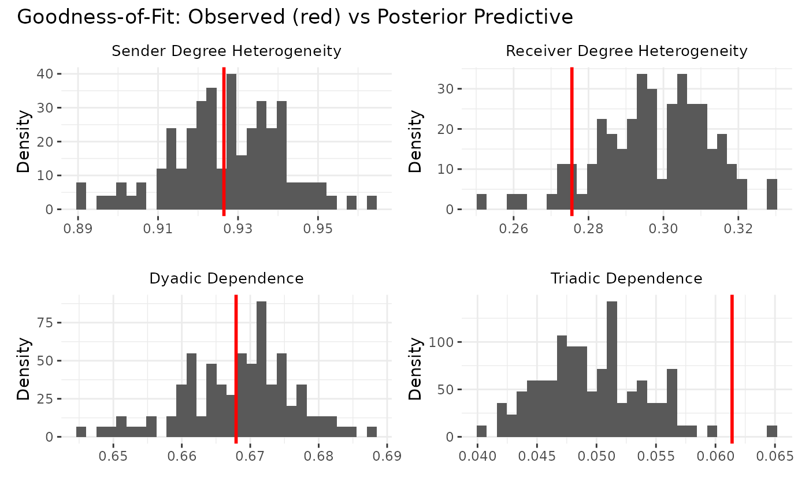
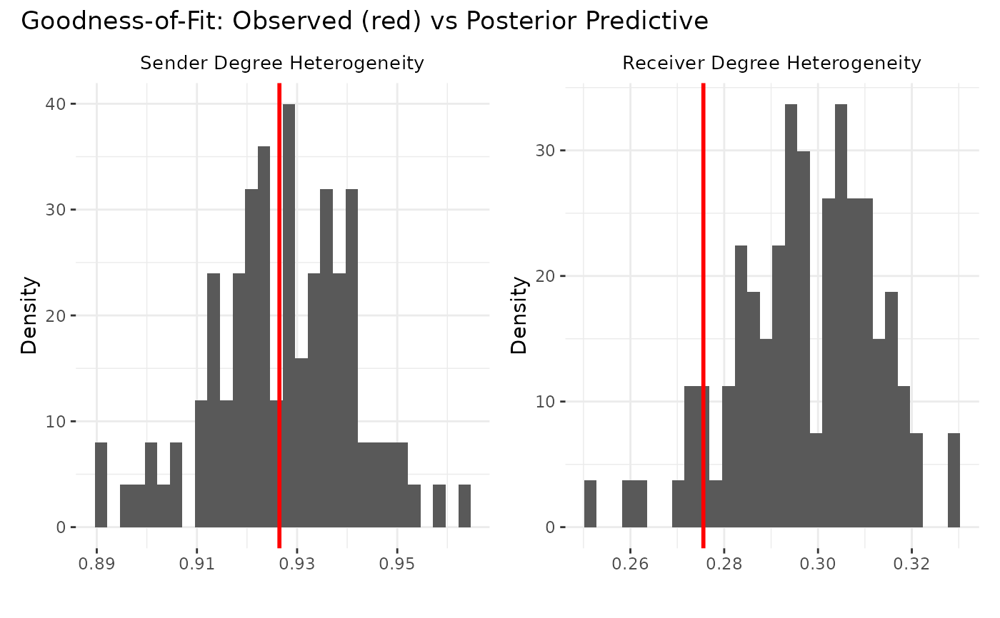

Plots observed network statistics against their posterior predictive distributions to assess model fit.
Arguments
- fit
An object of class "ame" or "lame" containing GOF statistics
- type
Character string: "auto" (default), "static", or "longitudinal". If "auto", determined by model class.
- statistics
Character vector specifying which statistics to plot. Default is all four: c("sd.row", "sd.col", "dyad.dep", "triad.dep")
- credible.level
Numeric between 0 and 1; credible interval level for longitudinal plots (default 0.95)
- ncol
Number of columns for faceted plot layout (default 2)
- point.size
Size of points in longitudinal plots (default 2)
- line.size
Width of lines in plots (default 1)
- title
Optional title for the plot
Details
Overview:
Goodness-of-fit (GOF) assessment is crucial for network models because standard residual diagnostics are often inadequate for capturing network dependencies. This function implements posterior predictive checking by:
Computing key network statistics from the observed data
Generating multiple networks from the model's posterior predictive distribution
Computing the same statistics on simulated networks
Visualizing the comparison to identify model inadequacies
Network Statistics Evaluated:
For unipartite (square) networks:
sd.row(Out-degree heterogeneity)Standard deviation of row means. High values indicate substantial variation in how active nodes are as senders/initiators. If the model underestimates this, it may be missing important sender effects or covariates.
sd.col(In-degree heterogeneity)Standard deviation of column means. High values indicate substantial variation in node popularity as receivers. Underestimation suggests missing receiver effects or popularity-related covariates.
dyad.dep(Reciprocity/Mutuality)Correlation between
Y[i,j]andY[j,i]. Positive values indicate reciprocity (mutual ties are more likely). The AME model captures this through the dyadic correlation parameter rho. Poor fit here suggests the need to adjust the dcor parameter.triad.dep(Transitivity/Clustering)Measures tendency for triadic closure (friend of a friend is a friend). Calculated as correlation between
Y[i,j]andsum(Y[i,k]*Y[k,j])/sqrt(n-2). AME captures this through multiplicative effects (U,V). Poor fit suggests increasing the latent dimension R.
For bipartite (rectangular) networks:
sd.row(Type A activity variation)Standard deviation of row means for Type A nodes. Indicates heterogeneity in how actively Type A nodes connect to Type B nodes.
sd.col(Type B popularity variation)Standard deviation of column means for Type B nodes. Indicates heterogeneity in how popular Type B nodes are with Type A nodes.
four.cycles(Bipartite clustering)Count of 4-cycles (rectangular paths A1-B1-A2-B2-A1). High values indicate that pairs of Type A nodes tend to connect to the same Type B nodes. Captured through bipartite multiplicative effects with appropriate R_row, R_col.
Interpretation Guide:
Histogram plots (static models):
Red vertical line: observed statistic value
Blue histogram: distribution from posterior predictive simulations
Good fit: red line falls within the bulk of the histogram
Poor fit: red line in the tail or outside the distribution
Common model inadequacies and solutions:
- Observed sd.row/sd.col too high
Model underestimates degree heterogeneity. Solutions: Add row/column covariates (Xrow, Xcol), enable random effects (rvar=TRUE, cvar=TRUE), or increase their variance.
- Observed dyad.dep outside distribution
Reciprocity not captured well. Solutions: For positive reciprocity, ensure dcor=TRUE. For negative, consider transformation or different family.
- Observed triad.dep too high
Clustering/transitivity underestimated. Solutions: Increase latent dimension R, add network covariates that capture homophily, or consider including community structure covariates.
- Multiple statistics showing poor fit
Fundamental model misspecification. Solutions: Change family, add missing covariates, or consider different model class.
Mathematical Details:
The posterior predictive p-value for statistic s is: $$p = P(s(Y_{rep}) \geq s(Y_{obs}) | Y_{obs})$$
where Y_rep is drawn from the posterior predictive distribution. Values near 0 or 1 indicate poor fit. The function visualizes the full distribution rather than just p-values for richer diagnostics.
Customization:
The function accepts custom GOF statistics through the model's custom_gof argument. These are automatically included in the plot. Custom statistics should capture network features important for your specific application.
Computational Notes:
GOF computation involves simulating multiple networks, which can be computationally intensive. The model uses the networks simulated during MCMC if gof=TRUE was specified. For post-hoc GOF, use the gof() function which generates new simulations.
Good model fit is indicated when:
Observed statistics fall within the central 95% of posterior predictive distributions
No systematic patterns of over/underestimation across statistics
Custom statistics (if provided) also show adequate fit
For longitudinal models, observed trajectories track within credible bands
Examples
# \donttest{
# Fit an AME model
data(YX_nrm)
fit_ame <- ame(YX_nrm$Y, Xdyad = YX_nrm$X, gof = TRUE,
nscan = 100, burn = 10, odens = 1, verbose = FALSE)
# Basic GOF plot
gof_plot(fit_ame)

# Plot only degree-related statistics
gof_plot(fit_ame, statistics = c("sd.row", "sd.col"))

# }